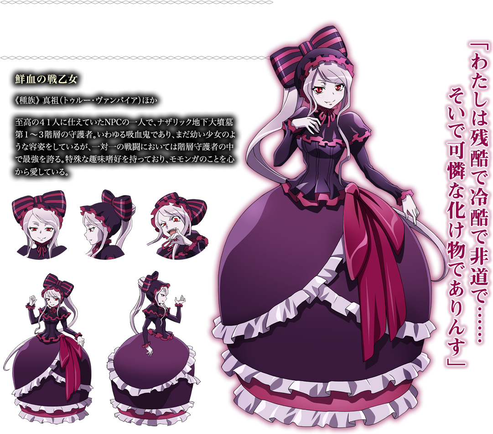

Shalltear Bloodfallen

シャルティア・ブラッドフォールン
Shalltear Bloodfallen (シャルティア・ブラッドフォールン) is a true vampire and the Floor Guardian of the first to third floors in the Great Tomb of Nazarick. She was created by Peroroncino.
Appearance
Shalltear is a vampire of short stature and has the appearance of a buxom fourteen-year-old girl. Described as a true beauty, she has pale shiny skin, seductive crimson-red eyes, and fine facial features. Shalltear's silver hair is tied in a ponytail through a large ribbon on top of it all, allowing others a full view of her face.